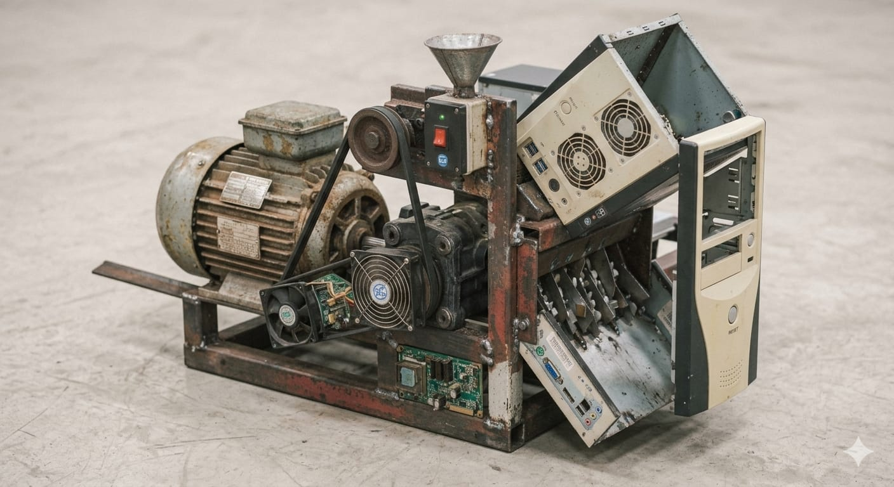
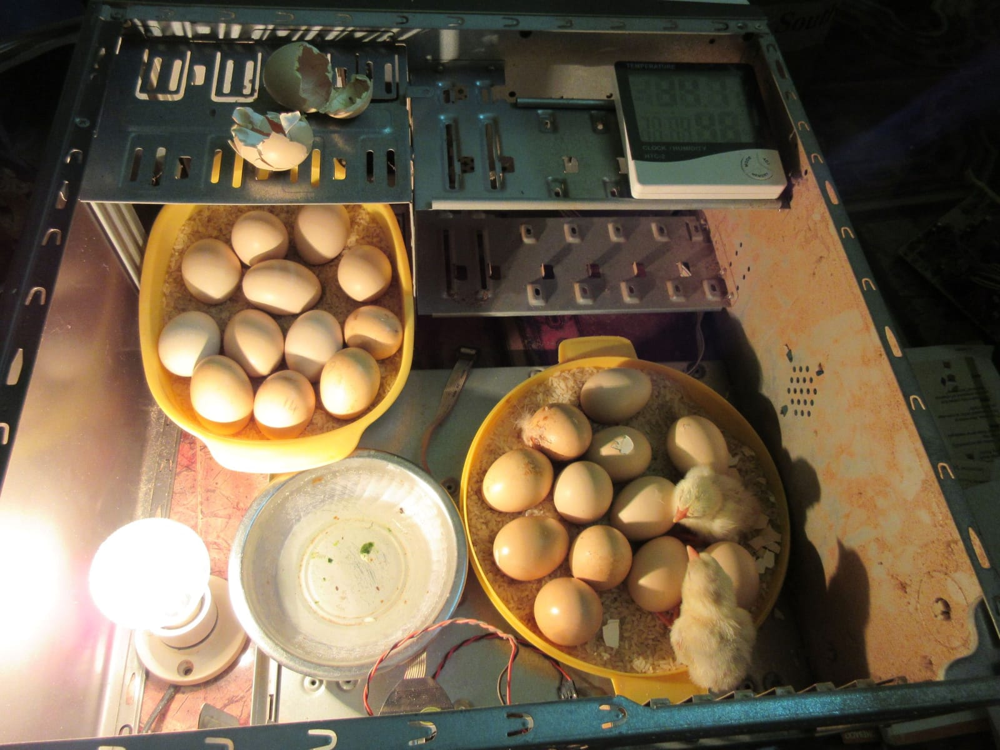
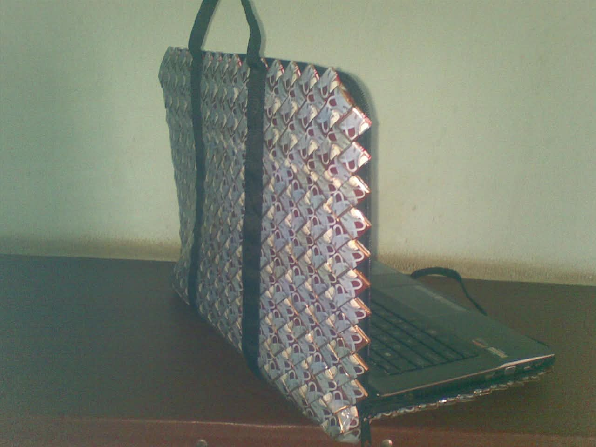
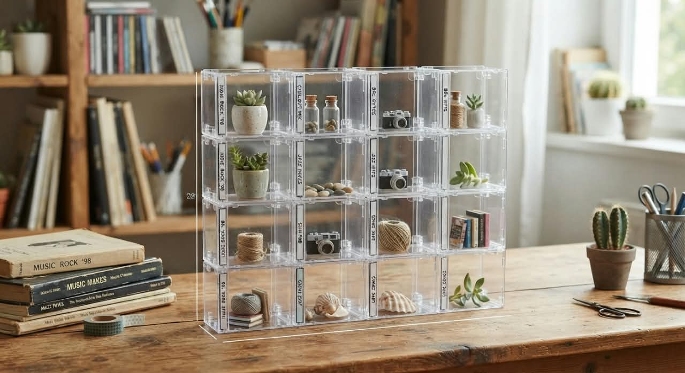
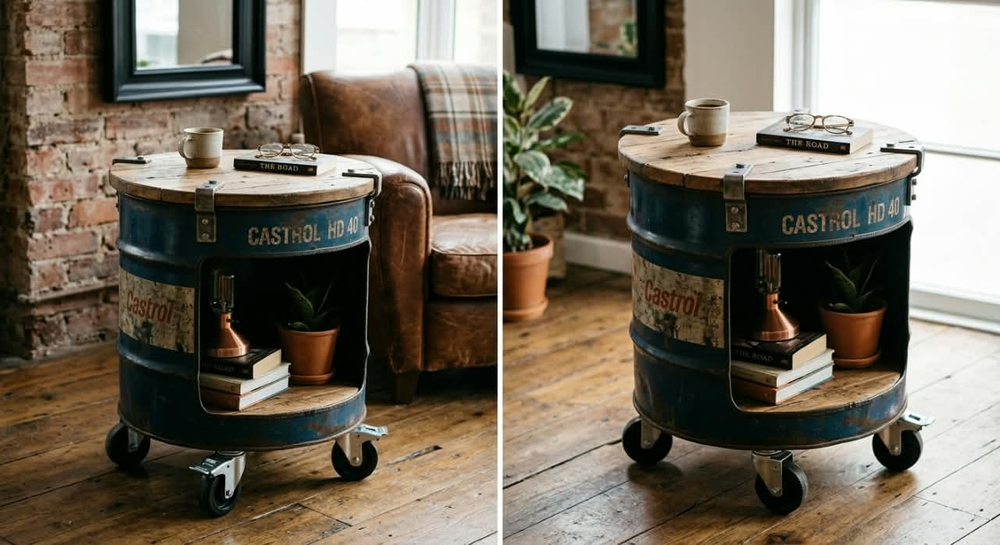

1. Reduce
Mengurangi sampah sejak awal. Contoh: bawa tote bag, bawa tumbler & kotak makan sendiri, pilih kemasan besar, paperless.
PROYEK KOLABORASI • SMK NEGERI TENGARAN • KELOMPOK 8
Pengolahan Limbah dengan Prinsip 3R. Mengubah CPU bekas & sampah plastik yang mencemari lingkungan menjadi produk bernilai jual tinggi.
Produk Recycle
Reduce Reuse Recycle
Laba Tertinggi / Unit
Di era digital, perkembangan teknologi sangat pesat dan volume limbah elektronik (e-waste) meningkat, salah satunya CPU komputer yang sudah usang. Komponen CPU bekas sering diabaikan dan mencemari lingkungan, padahal masih punya nilai guna tinggi jika diolah kembali.
Hierarki pengelolaan sampah: pencegahan paling utama, pembuangan akhir pilihan terakhir.
Mengurangi sampah sejak awal. Contoh: bawa tote bag, bawa tumbler & kotak makan sendiri, pilih kemasan besar, paperless.
Menggunakan kembali barang tanpa proses kimia. Contoh: botol bekas jadi pot, wadah selai jadi tempat bumbu, donasi baju layak pakai.
Mengolah limbah jadi produk baru. Contoh: sampah organik jadi kompos, botol PET ke bank sampah, tas dari bungkus saset.
6 produk recycle dari limbah elektronik & plastik. Semua dibuat dari barang bekas + modal kecil, laba besar.

Casing Power Supply bekas diubah jadi speaker Bluetooth. Suara jernih, hemat, estetik industrial.

Mendukung gerakan zero waste. Casing CPU dipakai mekanisme pisau + motor. Nilai jual paling tinggi.

Untuk peternak ayam skala rumahan, muat 10-20 telur. Ada thermostat digital, suhu 37,5°C - 38,5°C.

Fashion daur ulang warna-warni dari ±100 bungkus saset. Tahan air, ringan, artistik.

Rak minimalis transparan ala Skandinavia. Untuk tanaman sukulen, parfum, kosmetik.

Furnitur upcycling populer di kafe industrial. Kokoh, tahan bertahun-tahun, kesan mewah & estetik.